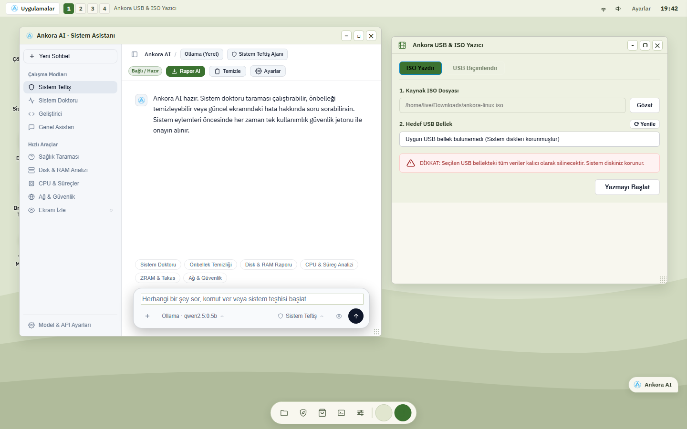

Escritorio turco, sereno y sin systemd.
AyazDE 5.0 sobre Devuan 6 Excalibur y Linux 6.12 LTS.



Diseñado para claridad y ligereza real
Rust y Tauri 2.0 (/usr/bin/ayaz-de)
Un único binario gestiona todo el escritorio y limpia el DOM a los 30 s.
Cuatro diseños y burbuja IA
Bostan inicia por defecto; cambie a Bakır, Cıvata, Arduvaz o 4.7 Clásico.
Aulas e impresoras listas
eta-touchdrv para FAZ 1/2/3, certificado MEB (~/.pki/nssdb) y CUPS/SANE.
Listo desde el primer arranque
Herramientas diarias y educativas integradas en AyazDE 5.0.
- Gestor de archivos USB e instalador .deb/.AppImage
- Tienda de 559 paquetes APT, Flathub y oficiales
- Ankora IA con Ollama local y token SHA-256 de 60 s
- Actualizador con rollback, bloqueo USB y pkexec
Comparación orientativa frente a escritorios populares
Ankora 5.0 prescinde de systemd manteniendo SysVinit y compresión ZRAM automática.
| Distribución | RAM en reposo |
|---|---|
| Ankora Linux 5.0 (AyazDE) | ~750 MB |
| Ubuntu 24.04 (GNOME) | 830 MB |
| Linux Mint 22.1 (Cinnamon) | 888 MB |
| Xubuntu 24.04 (Xfce) | 668 MB |
| Debian 12 (GNOME) | más de 1 GB |
Ankora 5.0: objetivo medido tras la migración a Tauri 2.0 y Devuan 6 Excalibur. Otras cifras provienen de pruebas públicas (Android Authority, oct. 2024).
Listo en tres pasos
Descargar
Obtenga ISO y SHA256SUMS de GitHub Releases.
Verificar y grabar
Comprueba la suma y grabe en USB extraíble.
Iniciar o mejorar
Arranque desde USB o actualice 4.7.x con .deb.
Preguntas frecuentes
¿Qué es Ankora Linux 5.0?
Sistema turco sin systemd sobre Devuan 6 Excalibur y Linux 6.12 LTS.
¿Funciona en equipos antiguos?
Apunta a ~750 MB en reposo con ZRAM automático bajo 4 GB.
¿Es gratuito?
Sí, completamente libre bajo licencia GPL-3.0.
¿Actualizar desde 4.7.x?
Directo con .deb; desde 4.6.x requiere instalación limpia.